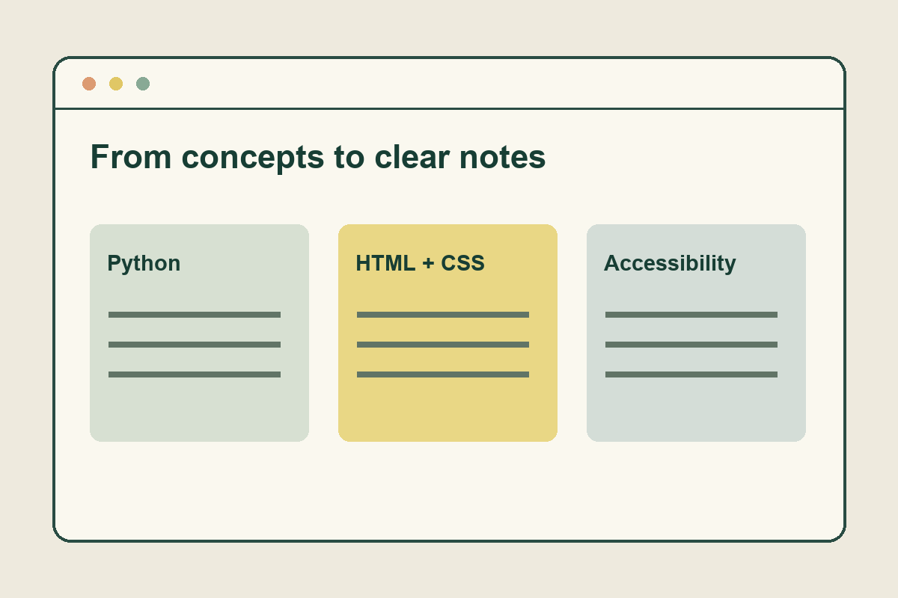

Advanced Django Docs
PythonDjangoDocumentation
A personal collection of course notes covering Python fundamentals, virtual environments, Django setup, semantic HTML, accessibility, and Bootstrap.
Project focus: organize commands, examples, and troubleshooting notes so the material is easier to revisit.
View individual documentation